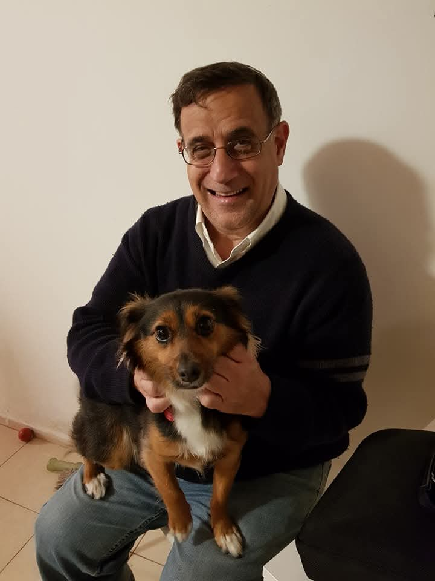

The Future-Focused Educator
Mark Stolovitsky is a distinguished, forward-thinking educational leader and headmaster who has dedicated his career to reshaping school environments and pioneering modern pedagogical frameworks. Educated at prestigious institutions including McGill University and the University of Calgary, he has spent decades championing progressive methodologies that bridge the gap between traditional learning and the evolving needs of the modern world. Known for his deep commitment to student-centric growth, community engagement, and specialized language development, Stolovitsky is widely respected for his unique ability to lead institutions through transformative structural and cultural shifts.

Between 2000 and 2026, Stolovitsky’s career has been defined by a sequence of impactful administrative milestones in both North American and Israeli educational landscapes. In the early 2000s, he successfully led Kadimah Academy in Buffalo, New York, as Headmaster, establishing a firm operational foundation during a crucial era of long-range expansion. He later stepped into the role of Head of School at the Ann and Nate Levine Academy in Dallas, Texas, where he orchestrated an ambitious, full-scale redesign of the institution. By replacing stagnant, rigid setups with collaborative, 21st-century classrooms, he transformed the school's teaching paradigm to emphasize critical thinking, digital literacy, and modern communication. Over the subsequent decade, Stolovitsky brought his expertise to Israel, making an enduring impact on the experimental faculty of the Ein Hayam Primary School in Haifa. There, he championed specialized English curricula and experimental, play-based methodologies that prioritized community care, immersive gamification, and creative global collaborations.